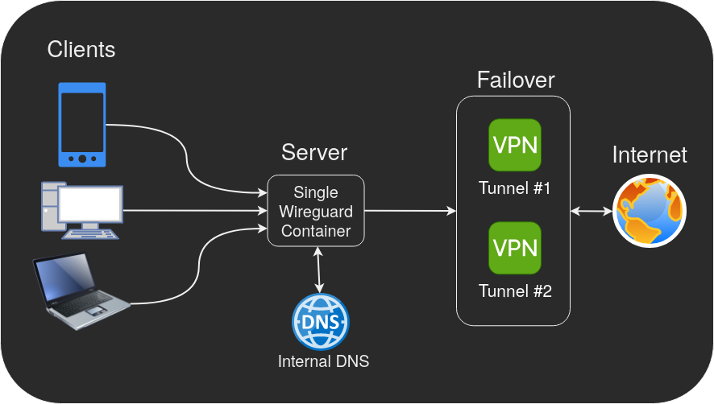
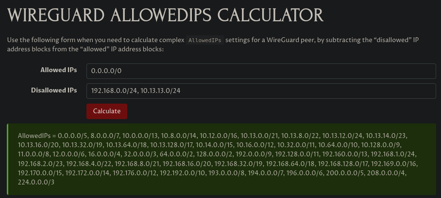

Wireguard Hub

Linuxserver's Wireguard container is extremely versatile, in this example we'll use it as a server that tunnels clients through multiple redundant vpn connections while maintaining access to the LAN.
VPN providers have a limit on the amount of devices, this setup will allow you to have an unlimited amount of devices tunneled through a single VPN connection while also supporting a failover backup connection!
Requirements
- A working instance of our Wireguard container in server mode.
Initial Wireguard Server Configuration
Configure a standard Wireguard server according to the Wireguard documentation.
wireguard:
image: lscr.io/linuxserver/wireguard:latest
container_name: wireguard
cap_add:
- NET_ADMIN
- SYS_MODULE
environment:
- PUID=1000
- PGID=1000
- TZ=Etc/UTC
- SERVERURL=wireguard.domain.com
- SERVERPORT=51820
- PEERS=1
- PEERDNS=auto
- INTERNAL_SUBNET=10.13.13.0
volumes:
- /path/to/appdata/config:/config
- /lib/modules:/lib/modules
ports:
- 51820:51820/udp
sysctls:
- net.ipv4.conf.all.src_valid_mark=1
restart: unless-stopped
Start the container and validate that docker logs wireguard contains no errors (Ignore the missing wg0.conf message), and validate that the server is working properly by connecting a client to it.
VPN Client Tunnels Configuration
Copy the 2 Wireguard configs that you get from your VPN providers into files under /config/wg_confs/wg1.conf and /config/wg_confs/wg2.conf.
Example wg1.conf
Make the following changes:
- Add
Table = 55111to distinguish rules for this interface. - Add
PostUp = ip rule add pref 10001 from 10.13.13.0/24 lookup 55111to forward traffic from the wireguard server through the tunnel using table 55111 and priority 10001. - Add
PreDown = ip rule del from 10.13.13.0/24 lookup 55111to remove the previous rule when the interface goes down. - Add
PersistentKeepalive = 25to keep the tunnel alive. - Add
AllowedIPs =and calculate the value using a Wireguard AllowedIPs Calculator.- Write
0.0.0.0/0in theAllowed IPsfield. - Write your LAN subnet and Wireguard server subnet in the
Disallowed IPsfield, for example:192.168.0.0/24, 10.13.13.0/24, make sure it doesn't include the VPN interface address (10.65.156.233in the example below).
- Write
- Make sure you're using the
PrivateKey,Address,PublicKey, andEndpointthat you got from your VPN provider (below is just an example).
[Interface]
PrivateKey = ...
Address = 10.65.156.233/32
Table = 55111
PostUp = ip rule add pref 10001 from 10.13.13.0/24 lookup 55111
PreDown = ip rule del from 10.13.13.0/24 lookup 55111
[Peer]
PublicKey = ...
AllowedIPs = 0.0.0.0/5, 8.0.0.0/7, 10.0.0.0/13, 10.8.0.0/14, 10.12.0.0/16, 10.13.0.0/21, 10.13.8.0/22, 10.13.12.0/24, 10.13.14.0/23, 10.13.16.0/20, 10.13.32.0/19, 10.13.64.0/18, 10.13.128.0/17, 10.14.0.0/15, 10.16.0.0/12, 10.32.0.0/11, 10.64.0.0/10, 10.128.0.0/9, 11.0.0.0/8, 12.0.0.0/6, 16.0.0.0/4, 32.0.0.0/3, 64.0.0.0/2, 128.0.0.0/2, 192.0.0.0/9, 192.128.0.0/11, 192.160.0.0/13, 192.168.1.0/24, 192.168.2.0/23, 192.168.4.0/22, 192.168.8.0/21, 192.168.16.0/20, 192.168.32.0/19, 192.168.64.0/18, 192.168.128.0/17, 192.169.0.0/16, 192.170.0.0/15, 192.172.0.0/14, 192.176.0.0/12, 192.192.0.0/10, 193.0.0.0/8, 194.0.0.0/7, 196.0.0.0/6, 200.0.0.0/5, 208.0.0.0/4, 224.0.0.0/3
Endpoint = 169.150.217.215:51820
PersistentKeepalive = 25
Example wg2.conf
Make the following changes:
- Add
Table = 55112to distinguish rules for this interface. - Add
PostUp = ip rule add pref 10002 from 10.13.13.0/24 lookup 55112to forward traffic from the wireguard server through the tunnel using table 55112 and priority 10002. - Add
PreDown = ip rule del from 10.13.13.0/24 lookup 55112to remove the previous rule when the interface goes down. - Add
PersistentKeepalive = 25to keep the tunnel alive. - Add
AllowedIPs =and calculate the value using a Wireguard AllowedIPs Calculator (same as above). - Make sure you're using the
PrivateKey,Address,PublicKey, andEndpointthat you got from your VPN provider (below is just an example).
[Interface]
PrivateKey = ...
Address = 10.67.126.217/32
Table = 55112
PostUp = ip rule add pref 10002 from 10.13.13.0/24 lookup 55112
PreDown = ip rule del from 10.13.13.0/24 lookup 55112
[Peer]
PublicKey = ...
AllowedIPs = 0.0.0.0/5, 8.0.0.0/7, 10.0.0.0/13, 10.8.0.0/14, 10.12.0.0/16, 10.13.0.0/21, 10.13.8.0/22, 10.13.12.0/24, 10.13.14.0/23, 10.13.16.0/20, 10.13.32.0/19, 10.13.64.0/18, 10.13.128.0/17, 10.14.0.0/15, 10.16.0.0/12, 10.32.0.0/11, 10.64.0.0/10, 10.128.0.0/9, 11.0.0.0/8, 12.0.0.0/6, 16.0.0.0/4, 32.0.0.0/3, 64.0.0.0/2, 128.0.0.0/2, 192.0.0.0/9, 192.128.0.0/11, 192.160.0.0/13, 192.168.1.0/24, 192.168.2.0/23, 192.168.4.0/22, 192.168.8.0/21, 192.168.16.0/20, 192.168.32.0/19, 192.168.64.0/18, 192.168.128.0/17, 192.169.0.0/16, 192.170.0.0/15, 192.172.0.0/14, 192.176.0.0/12, 192.192.0.0/10, 193.0.0.0/8, 194.0.0.0/7, 196.0.0.0/6, 200.0.0.0/5, 208.0.0.0/4, 224.0.0.0/3
Endpoint = 169.150.217.232:51820
PersistentKeepalive = 25
Save the changes and restart the container with docker restart wireguard, validate that docker logs wireguard contains no errors.
Perform the following validations to check that the VPN tunnels works:
- Check that you have connectivity on wg1 by running
docker exec wireguard ping -c4 -I wg1 1.1.1.1. - Check that you have connectivity on wg2 by running
docker exec wireguard ping -c4 -I wg2 1.1.1.1. - Check the details of your VPN tunnel on wg1 by running
docker exec wireguard curl --interface wg1 -s https://am.i.mullvad.net/json, you should get an IP that is different from your WAN IP. - Check the details of your VPN tunnel on wg2 by running
docker exec wireguard curl --interface wg2 -s https://am.i.mullvad.net/json, you should get an IP that is different from your WAN IP.
Failover Script
Place the following failover script under /config/wg_failover.sh, the defaults match the examples but you can read the comments explaining each parameter and modify them.
#!/bin/bash
# Ping targets to check connectivity, the default is cloudflare and google DNS addresses
TARGETS=("1.1.1.1" "1.0.0.1" "8.8.8.8" "8.8.4.4")
# How many failed pings are allowed before failover
FAILOVER_LIMIT=2
# The subnets that should be tunneled through wireguard
LOCAL_RANGES=("10.13.13.0/24")
# An array of tunnel details corresponding to the tunnel conf: <tunnel-name>;<table-number>;<rule-priority>
TUNNELS=("wg1;55111;10001" "wg2;55112;10002")
# Connectivity check interval in seconds
PING_INTERVAL=20
LOG_FILE="/config/wg_failover.log"
apply_rules () {
for LOCAL_RANGE in "${LOCAL_RANGES[@]}"
do
ip rule del from ${LOCAL_RANGE} lookup $1
ip rule add pref $2 from ${LOCAL_RANGE} lookup $1
done
}
FAILED=()
INDEX=0
while sleep $PING_INTERVAL
do
COUNTER=1
IFS=";" read -r -a TUNNEL <<< "${TUNNELS[INDEX]}"
TUNNEL_NAME="${TUNNEL[0]}"
TUNNEL_TABLE=${TUNNEL[1]}
TUNNEL_PRIORITY=${TUNNEL[2]}
wg-quick up "${TUNNEL_NAME}" > /dev/null 2>&1
for TARGET in "${TARGETS[@]}"
do
if ! ping -c1 -w10 -I "${TUNNEL_NAME}" "${TARGET}" > /dev/null 2>&1; then
(( COUNTER++ ))
fi
done
if [[ "$COUNTER" -gt "$FAILOVER_LIMIT" ]] && [[ ! "${FAILED[*]}" =~ "${TUNNEL_NAME}" ]]; then
echo "$(date +'%Y-%m-%d %T') - ${TUNNEL_NAME} failed ${COUNTER} pings" >> $LOG_FILE
apply_rules "${TUNNEL_TABLE}" "$(( TUNNEL_PRIORITY+1000 ))"
FAILED+=(${TUNNEL_NAME})
elif [[ "$COUNTER" -le "$FAILOVER_LIMIT" ]] && [[ "${FAILED[*]}" =~ "${TUNNEL_NAME}" ]]; then
echo "$(date +'%Y-%m-%d %T') - ${TUNNEL_NAME} restored" >> $LOG_FILE
apply_rules "${TUNNEL_TABLE}" "$(( TUNNEL_PRIORITY ))"
FAILED=( "${FAILED[@]/$TUNNEL_NAME}" )
elif [[ "$COUNTER" -gt "$FAILOVER_LIMIT" ]] && [[ "${FAILED[*]}" =~ "${TUNNEL_NAME}" ]]; then
wg-quick down "${TUNNEL_NAME}" > /dev/null 2>&1
fi
(( INDEX++ ))
if [[ $INDEX+1 > ${#TUNNELS[@]} ]]; then
INDEX=0
fi
done
Wireguard Server Configuration Changes
Edit /config/templates/server.conf, replace the PostUp/PreDown rules with the rules listed below, these rules are required for the server to forward traffic to the VPN client tunnels and activate the fail-over script.
PostUp = iptables -I FORWARD -i %i -o wg1 -j ACCEPT
PostUp = iptables -I FORWARD -i %i -o wg2 -j ACCEPT
PostUp = iptables -I FORWARD -i %i -d 10.0.0.0/8 -j ACCEPT
PostUp = iptables -I FORWARD -i %i -d 172.16.0.0/12 -j ACCEPT
PostUp = iptables -I FORWARD -i %i -d 192.168.0.0/16 -j ACCEPT
PostUp = iptables -I FORWARD -o %i -m state --state RELATED,ESTABLISHED -j ACCEPT
PostUp = iptables -A FORWARD -j REJECT
PostUp = iptables -t nat -A POSTROUTING -o wg1 -j MASQUERADE
PostUp = iptables -t nat -A POSTROUTING -o wg2 -j MASQUERADE
PostUp = iptables -t nat -A POSTROUTING -o eth0 -j MASQUERADE
PostUp = ip rule add pref 1000 lookup main suppress_prefixlength 0
PostUp = /config/wg_failover.sh &
PreDown = ip rule del lookup main suppress_prefixlength 0
PreDown = iptables -t nat -D POSTROUTING -o eth0 -j MASQUERADE
PreDown = iptables -t nat -D POSTROUTING -o wg1 -j MASQUERADE
PreDown = iptables -t nat -D POSTROUTING -o wg2 -j MASQUERADE
PreDown = iptables -D FORWARD -j REJECT
PreDown = iptables -D FORWARD -o %i -m state --state RELATED,ESTABLISHED -j ACCEPT
PreDown = iptables -D FORWARD -i %i -d 10.0.0.0/8 -j ACCEPT
PreDown = iptables -D FORWARD -i %i -d 172.16.0.0/12 -j ACCEPT
PreDown = iptables -D FORWARD -i %i -d 192.168.0.0/16 -j ACCEPT
PreDown = iptables -D FORWARD -i %i -o wg1 -j ACCEPT
PreDown = iptables -D FORWARD -i %i -o wg2 -j ACCEPT
Save the changes and delete /config/wg_confs/wg0.conf so it would be generated again, restart the container with docker restart wireguard, validate that docker logs wireguard contains no errors.
Try navigating to https://am.i.mullvad.net/json on one of your client devices and verify that the Wireguard server is working properly and that you're tunneled through one the VPN tunnels.
Created: 2023-11-14